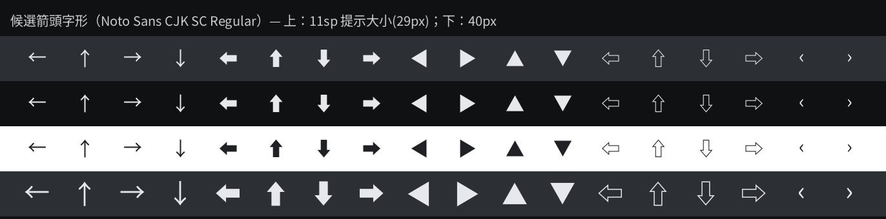

arrow_up/left/right/down 的 label 寫的是一個空格，
提示等於不存在；② 我剛纔沒等方案定就改了主題與字體，已全部還原（工作樹回到上一個提交）。
下面是純設計稿，選定後我再動手。
瀏覽器會用自己的字體回退，箭頭形狀不可信；下圖是直接拿要打包進鍵盤的 Noto Sans CJK SC Regular 輪廓、按**實機像素尺寸**畫的，形狀與粗細以這張爲準。

角標只有 11–15px，形狀越實、越飽滿越好認。
| 字形 | 碼位 | 判斷 |
|---|---|---|
| ← | U+2190 | 細線，11sp 下幾乎看不見（現行問題所在） |
| ⬅ | U+2B05 | 推薦：實心箭頭，同字號最清楚 |
| ◀ | U+25C0 | 實心三角，也很清楚；但更像「播放」而非「返回」 |
| ‹ | U+2039 | 太小，與標點混淆 |
tools/rebuild_key_font.py
補進鍵盤字體子集（現有子集只有 ←↑→↓）。實心箭頭在 11sp 就够讀；若仍嫌小，可把 key_long_text_size 提到 13，代價是鍵面上方更擠。